cooking
32 foods. Full-serving numbers only; recipe calculators hidden for now.
canonical domain: cooking.aolabs.io
fallback route: aolabs.io/cooking
entree
pasta
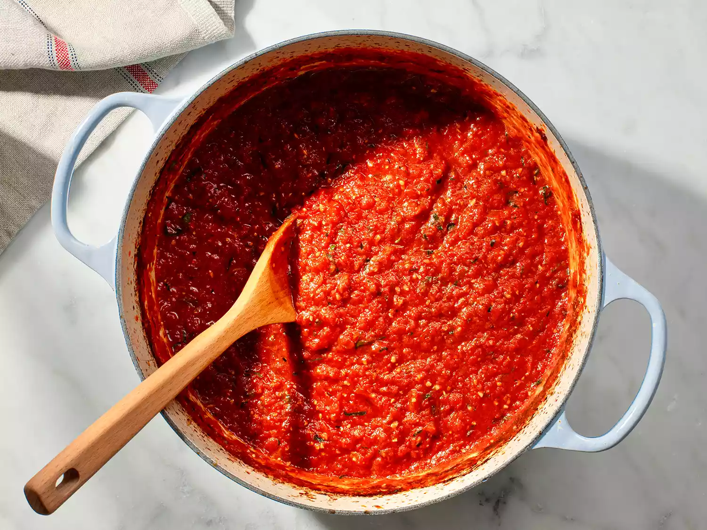
- Boil De Cecco #11 in well-salted water; finish just under al dente.
- Use Rao's mushroom sausage sauce fast, or freezer-portioned Serious Eats red sauce when stocked.
- Finish with pasta water, Parmigiano Reggiano, and black pepper.
$6.50 / plate
$22.00 / plate
0.30x
775 kcal
32/100
58/100
30g
1,050mg
48mg
0.05%
entree
Market 32 penne alla vodka w/ sausage
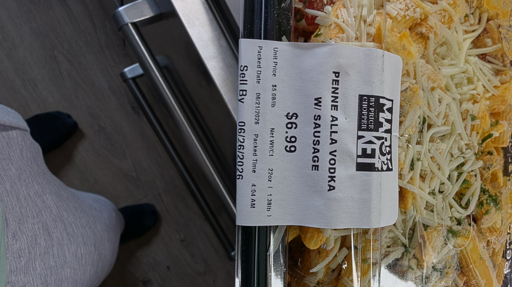
- Buy the 22 oz Market 32 / Price Chopper penne alla vodka w/ sausage container.
- Heat until steaming.
- Package label: 1 container, 1,280 kcal, 107g carbs, 9g fiber, 55g protein, 1,890mg sodium.
$6.99 / container
$6.99 / container
1.00x
1,280 kcal
20/100
70/100
55g
1,900mg
205mg
0.08%
breakfast
greek yogurt and granola
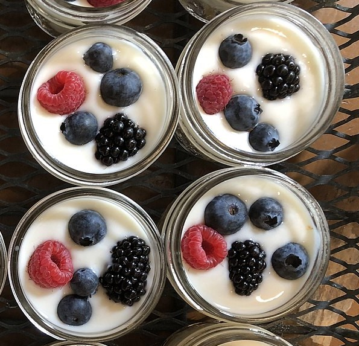
- Open yogurt.
- Dump granola on it.
- Eat. That was breakfast.
$4.00 / bowl
$6.50 / bowl
0.62x
600 kcal
62/100
76/100
58g
2,100mg
23mg
0.03%
entree
rice and eggs
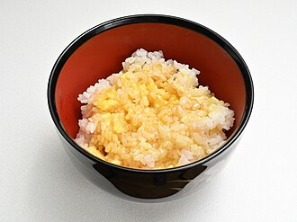
- Cook rice.
- Cook the eggs separately: fry them, soft-scramble them, or steam them until they are cooked.
- Put cooked eggs on rice. Add soy sauce. Done.
$1.75 / plate
$8.00 / plate
0.22x
780 kcal
45/100
78/100
31g
1,100mg
750mg
0.08%
entree
raw salmon and soy sauce
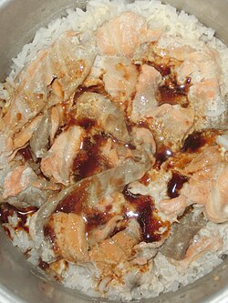
- Buy whatever kosher salmon from the grocery store.
- If the label does not say raw-ready or previously frozen for parasite control, treat it as ordinary raw grocery salmon.
- Skin it, slice it, dip it in soy sauce. That is the whole recipe.
- FDA raw-seafood note: previously frozen is the raw-fish rule of thumb; freezing still does not kill every harmful germ.
$16.00 / plate
$28.00 / plate
0.57x
1,000 kcal
92/100
88/100
98g
3,400mg
285mg
8%
snack
avocado
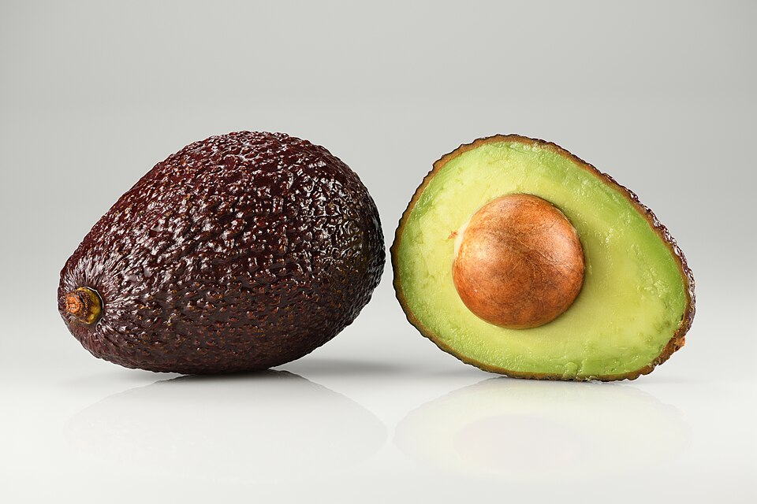
- Start with a clean avocado pit or a young avocado tree.
- For a pit, suspend the broad end in water until roots and a shoot form, then pot it in fast-draining soil. For a young tree, plant it directly in fast-draining soil.
- Grow in full sun with wind and frost protection. Water deeply, keep coarse mulch off the trunk, and let the soil drain between waterings.
- Harvest a mature avocado, then ripen it at room temperature until it yields to gentle palm pressure.
- Wash it, cut lengthwise around the pit, twist the halves apart, and scoop the pit out with a spoon.
- Peel or spoon out the flesh. Add 1-2 g salt if needed. Eat the avocado.
- Sources: California Avocado grow guide and cutting guide.
$0.75 / avocado
$1.50 / avocado
0.50x
250 kcal
96/100
64/100
3g
70mg
0mg
0.03%
beverage
avocado smoothie
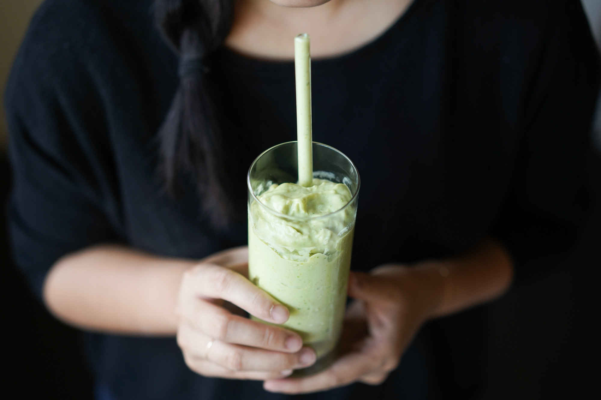
- Use the Hungry Huy sinh tố bơ baseline: frozen ripe avocado, milk, condensed milk, and ice.
- Blend hard until it is thick and completely smooth; add a pinch of salt only if it tastes flat.
- For maximum lazy: use frozen avocado chunks and cold milk so it comes out milkshake-thick.
| ingredient | amount |
|---|---|
| frozen ripe avocado | |
| ice | |
| milk | |
| sweetened condensed milk |
$3.75 / serving
$7.50 / serving
0.50x
850 kcal
42/100
72/100
23g
800mg
70mg
0.08%
dessert
crème brûlée
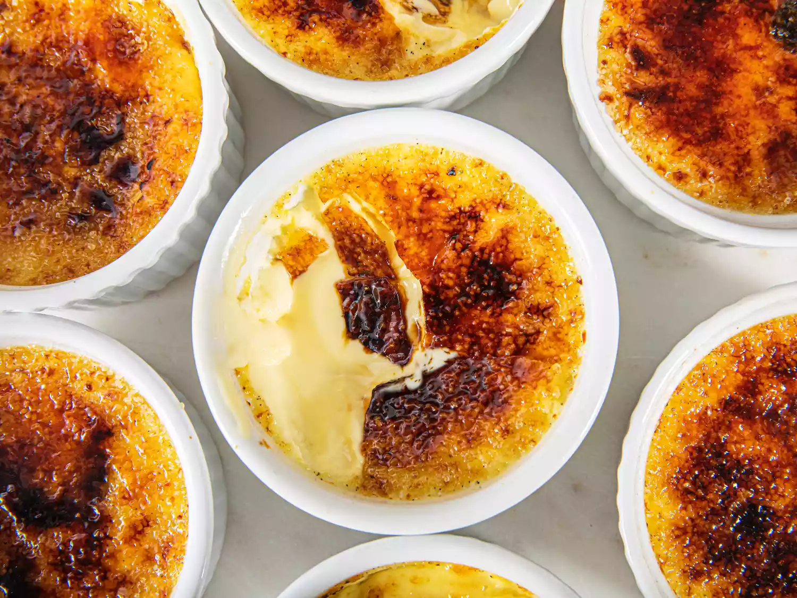
- Use the Serious Eats method: equal parts cream and whole milk, vanilla, egg yolks, sugar, and salt.
- Default batch: four 7 oz ramekins filled with 6 oz custard each, 24 oz total.
- Temper hot dairy into yolks slowly; strain so the custard is completely smooth.
- Bake low in a water bath until the centers wobble; chill at least 4 hours.
- Torch a thin, even sugar layer right before eating so the top cracks instead of sweating.
| ingredient | amount |
|---|---|
| heavy cream | |
| whole milk | |
| large egg yolks | |
| sugar in custard | |
| vanilla extract | |
| Diamond Crystal kosher salt | |
| table salt, if using instead | |
| sugar for torching |
$2.13 / 6 oz ramekin
$12.00 / 6 oz ramekin
0.18x
450 kcal
46/100
48/100
7g
250mg
200mg
0.06%
entree
Bánh xèo
- Use the Serious Eats batter ratios: rice flour, cornstarch, turmeric, coconut milk, water, salt, and scallions.
- Rest the batter so it hydrates; keep pork belly, shrimp, mung beans, bean sprouts, herbs, and nước chấm ready before frying.
- Use a ripping-hot lightly oiled pan, pour thin, cover briefly, then uncover until the edge turns lacy and crisp.
- Fold once and eat immediately with lettuce, mint, cilantro, and dipping sauce.
| ingredient | amount |
|---|---|
| rice flour | |
| cornstarch | |
| ground turmeric | |
| salt | |
| water | |
| coconut milk | |
| scallions | |
| pork belly or shoulder | |
| shrimp | |
| bean sprouts | |
| cooked mung beans | |
| neutral oil for the pan |
$3.25 / restaurant-size order
$17.00 / restaurant-size order
0.19x
650 kcal
58/100
68/100
28g
1,000mg
170mg
0.1%
dessert
da ua
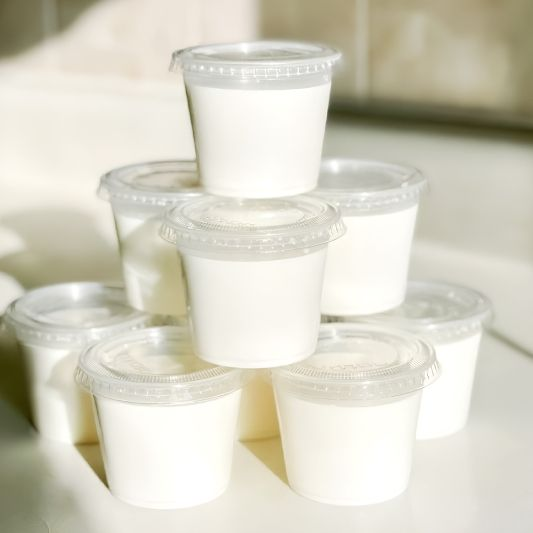
- Use the White On Rice Vietnamese yogurt method: condensed milk, warm water, whole milk, and live yogurt starter.
- Dissolve condensed milk first; cool the mix to warm, not hot, before starter goes in.
- Portion into clear cups, incubate around 105-110°F until set, then chill hard.
| ingredient | amount |
|---|---|
| sweetened condensed milk | |
| near-boiling water | |
| whole milk | |
| plain live yogurt starter |
$0.57 / 4 oz cup
$2.00 / 4 oz cup
0.29x
205 kcal
64/100
62/100
9g
330mg
33mg
0.12%
dessert
Bánh bò nướng
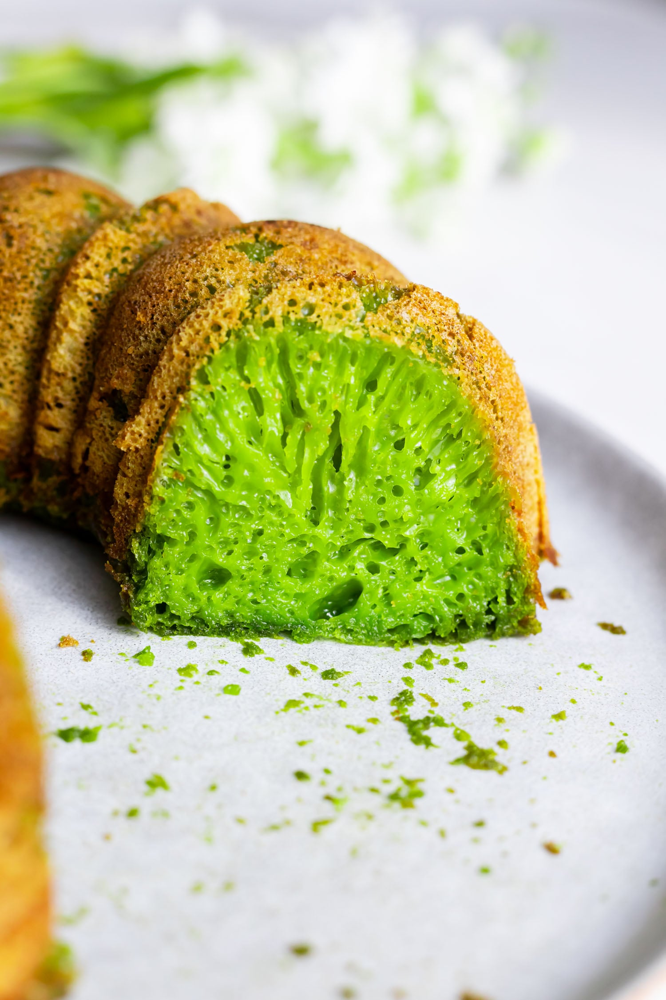
- Use Cooking Therapy's bánh bò nướng method for the honeycomb texture.
- Warm coconut milk, sugar, and pandan leaves; cool before eggs touch it.
- Fold tapioca starch, salt, and baking powder gently so the batter keeps air; strain before baking.
- Preheat the pan, bake until springy, then cool upside down before cutting.
| ingredient | amount |
|---|---|
| coconut milk | |
| pandan leaves | |
| large eggs | |
| granulated sugar | |
| pandan extract | |
| vanilla extract | |
| tapioca starch | |
| single-acting baking powder | |
| salt |
$4.60 / lb
$12.80 / lb
0.36x
300 kcal
36/100
38/100
6g
220mg
105mg
0.05%
dessert
Bánh bò
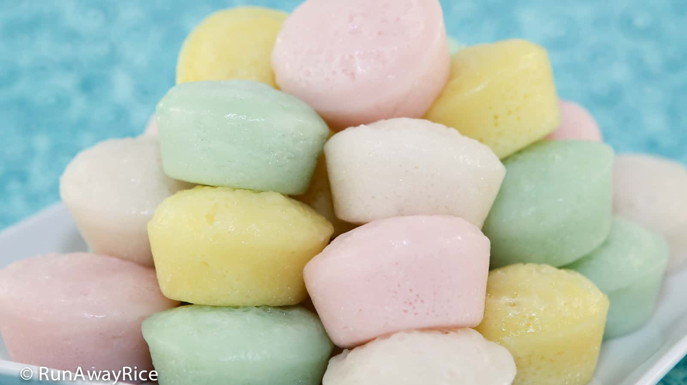
- Use RunAwayRice bánh bò hấp for the steamed, bubbly cake texture.
- Mix rice flour, tapioca starch, sugar, yeast, coconut milk, warm water, vanilla sugar, and salt into a pourable batter.
- Proof until it smells lightly yeasty and has visible bubbles, then steam in hot greased cups without opening the lid early.
| ingredient | amount |
|---|---|
| warm water for yeast | |
| active dry yeast | |
| sugar for yeast | |
| rice flour | |
| tapioca starch | |
| water, divided | |
| sugar | |
| vanilla sugar | |
| coconut milk | |
| vegetable oil for cups |
$0.30 / bánh bò
$1.00 / bánh bò
0.30x
250 kcal
32/100
30/100
5g
80mg
0mg
0.05%
appetizer
Bánh bèo
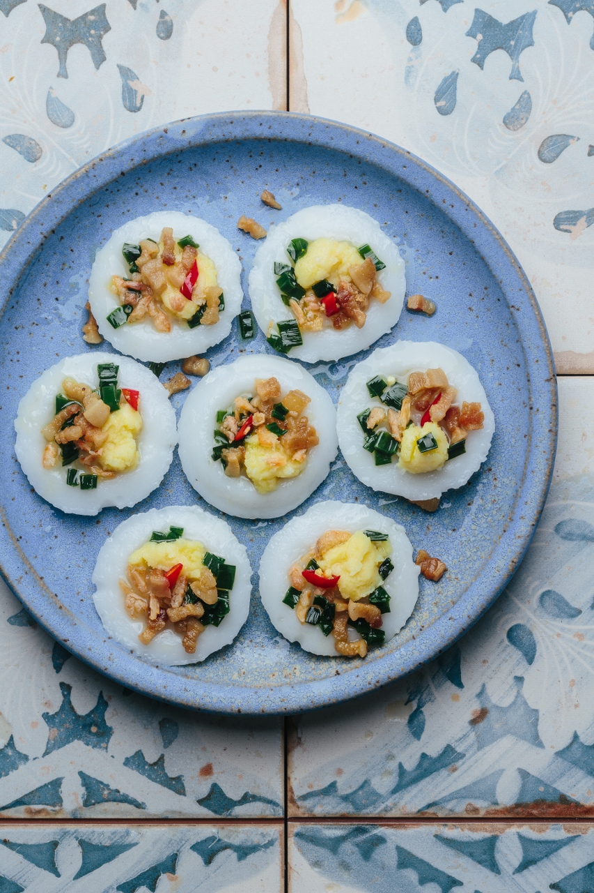
- Use the Beyond Sweet and Savory bánh bèo method for the cups, shrimp floss, scallion oil, and sauce.
- Whisk rice flour, tapioca starch, water, oil, and salt; rest the batter so it hydrates.
- Steam shallow batter in small dishes until glossy and set.
- Go heavy on dried shrimp floss, scallion oil, fried shallot, crisp pork fat, and nước chấm.
| ingredient | amount |
|---|---|
| rice flour | |
| tapioca starch | |
| water | |
| vegetable oil | |
| salt | |
| split mung beans | |
| dried shrimp for floss | |
| pork fat or crisp pork topping | |
| scallions | |
| scallion oil | |
| fish sauce | |
| water for sauce | |
| sugar for sauce | |
| lime juice |
$0.42 / bánh bèo
$1.13 / bánh bèo
0.37x
500 kcal
50/100
64/100
15g
550mg
65mg
0.08%
beverage
mung bean milk tea with boba
- Use 7 Leaves' mung bean milk tea profile: mung bean, jasmine/green tea, pandan, milk, ice, and boba.
- Simmer mung beans until tender, blend with water, and strain smooth.
- Brew jasmine green tea strong; sweeten with rock sugar and pandan, then combine with mung bean milk, dairy, ice, and boba.
- Hold boba in syrup and build the drink while the pearls are still warm and chewy.
| ingredient | amount |
|---|---|
| dry split mung beans | |
| water for mung beans | |
| strong jasmine green tea | |
| whole milk | |
| sweetened condensed milk | |
| rock sugar syrup | |
| pandan extract | |
| cooked boba pearls | |
| ice |
$4.13 / 24 oz cup
$7.50 / 24 oz cup
0.55x
575 kcal
22/100
34/100
9g
340mg
13mg
0.06%
beverage
cà phê sữa đá
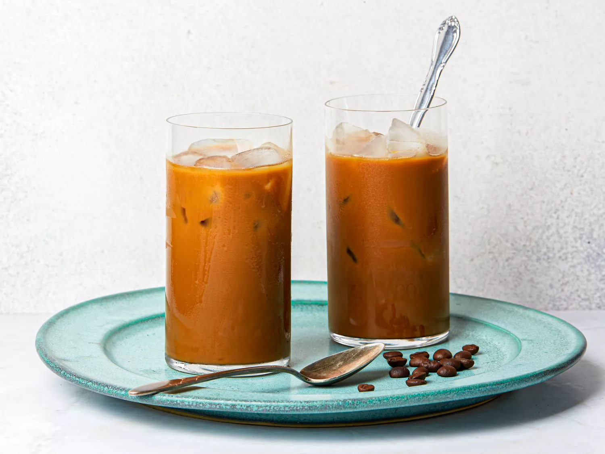
- Use the Serious Eats Vietnamese coffee method as the baseline.
- Pack a phin with Café Du Monde coffee and chicory; bloom with a small splash of hot water.
- Let it drip slowly over condensed milk, stir until glossy, then pour over a full glass of ice.
- Use enough coffee strength that the ice does not flatten it.
| ingredient | amount |
|---|---|
| coffee and chicory grounds | |
| hot water | |
| sweetened condensed milk | |
| ice |
$1.38 / 12 oz glass
$5.00 / 12 oz glass
0.28x
250 kcal
28/100
28/100
6g
180mg
25mg
0.02%
dessert
beignets
- Use Café Du Monde's mix instructions for the low-friction version: mix, roll, cut, fry, bury in powdered sugar.
- Measure water precisely first; only adjust if the dough is not soft like drop biscuit dough.
- Fry at 370°F until puffed and hollow; use cottonseed oil for a Café Du Monde-style fry.
- Powdered sugar is not a precise ratio. Use an irresponsible-looking mound while the beignets are hot.
| ingredient | amount |
|---|---|
| Café Du Monde beignet mix | |
| water | |
| powdered sugar for burying |
$0.94 / order of 3 beignets
$4.53 / order of 3 beignets
0.21x
600 kcal
30/100
25/100
11g
350mg
8mg
0.04%
beverage
café au lait
- Use Café Du Monde's coffee demonstration ratio and serve it au lait: half strong coffee and half hot milk.
- Brew coffee and chicory strong enough to survive the milk.
- Heat the milk until hot and steaming, then mix equal parts coffee and milk.
| ingredient | amount |
|---|---|
| Café Du Monde coffee and chicory grounds | |
| brewing water | |
| whole milk |
$0.88 / regular hot cup
$3.60 / regular hot cup
0.24x
185 kcal
76/100
48/100
9g
320mg
30mg
0.02%
dessert
disney churros
- Use the official Disney Parks churro dough, but pipe full Disneyland-size long ridged churros instead of bite-size pieces.
- Boil water, butter, salt, and cinnamon; dump in flour and stir until a dough ball pulls from the pot.
- Cool 5-7 minutes so eggs do not scramble; beat in eggs one at a time.
- Pipe long ridged churros, fry crisp, then toss immediately in cinnamon sugar.
| ingredient | amount |
|---|---|
| water | |
| unsalted butter | |
| salt | |
| ground cinnamon in dough | |
| all-purpose flour | |
| large eggs | |
| sugar for coating | |
| cinnamon for coating | |
| neutral frying oil |
$0.75 / churro
$6.50 / churro
0.12x
375 kcal
34/100
32/100
6g
220mg
55mg
0.04%
dessert
mochi donuts
- Use Hungry Huy's mochi donut method for the Pon de Ring-style chew.
- Make the tapioca-flour dough, rest it, then shape connected balls on parchment squares.
- Fry parchment-side down first; peel parchment away once the dough sets.
- Glaze with vanilla, matcha, or black sesame while still slightly warm.
| ingredient | amount |
|---|---|
| glutinous rice flour | |
| tapioca starch | |
| baking powder | |
| salt | |
| sugar | |
| large egg | |
| whole milk | |
| shortening or butter | |
| powdered sugar for glaze | |
| milk for glaze | |
| vanilla |
$0.90 / mochi donut
$3.50 / mochi donut
0.26x
350 kcal
30/100
30/100
5g
180mg
50mg
0.06%
snack
Point Reyes blue cheese block
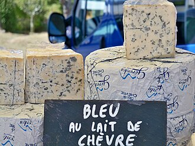
- Use Curd Nerd's blue cheese recipe.
- Warm raw whole cow milk; stir in mesophilic starter and Penicillium roqueforti; rest so the culture acidifies the milk.
- Add diluted microbial rennet, wait for a clean set, cut the curd, drain whey, salt, and pack loosely into a small mold.
- Flip as it drains, then pierce the block after it firms so oxygen reaches the center and the blue mold can grow.
- Age cold and humid until the paste turns creamy and blue-green veins spread through it.
| ingredient | amount |
|---|---|
| raw whole cow milk | |
| mesophilic blue-cheese culture | |
| Penicillium roqueforti | |
| microbial rennet | |
| salt |
$4.75 / 6 oz block
$15.00 / 6 oz block
0.32x
100 kcal
97/100
70/100
6g
300mg
25mg
0.04%
snack
BelGioioso mozzarella cheese
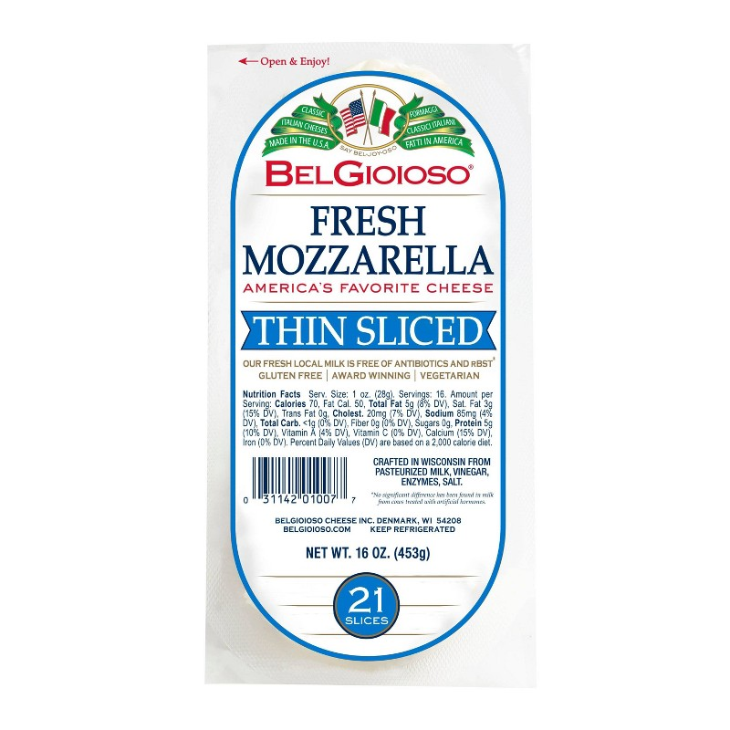
- Use this vinegar-and-rennet mozzarella recipe.
- Start with cold pasteurized whole milk; dilute vinegar in water and stir it into the milk.
- Warm to about 90 F, stir in diluted microbial rennet/enzyme, cover, and wait for a clean curd.
- Cut and drain the curd, heat it in hot water or a microwave-safe bowl, salt it, and stretch/fold until glossy and elastic.
- Shape into a 16 oz log, chill until sliceable, then cut thin slices.
| ingredient | amount |
|---|---|
| pasteurized whole milk | |
| vinegar | |
| microbial rennet/enzyme | |
| salt |
$6.25 / 16 oz package
$8.49 / 16 oz package
0.74x
1,120 kcal
94/100
78/100
80g
4,800mg
320mg
0.03%
entree
caesar salad
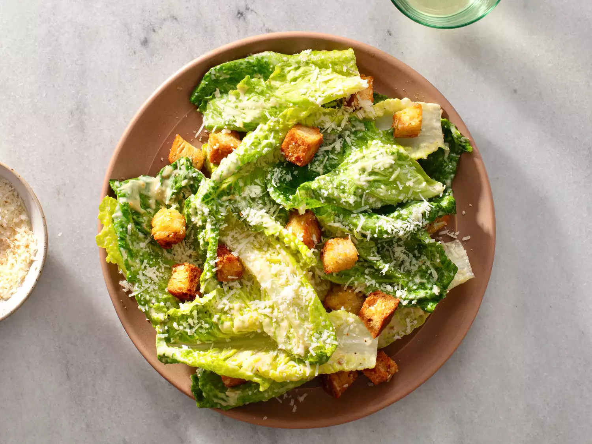
- Use the Serious Eats Caesar method for the dressing and crouton baseline.
- Chop cold romaine and keep it dry so the dressing sticks.
- Blend garlic, lemon, Dijon, Worcestershire, anchovy, Parmesan, black pepper, and egg yolk or mayo.
- Add Parmesan, croutons, avocado, and 2 eggs; dress only when ready to eat.
$8.50 / salad
$16.00 / salad
0.53x
725 kcal
82/100
82/100
34g
1,200mg
470mg
0.45%
appetizer
shao mai
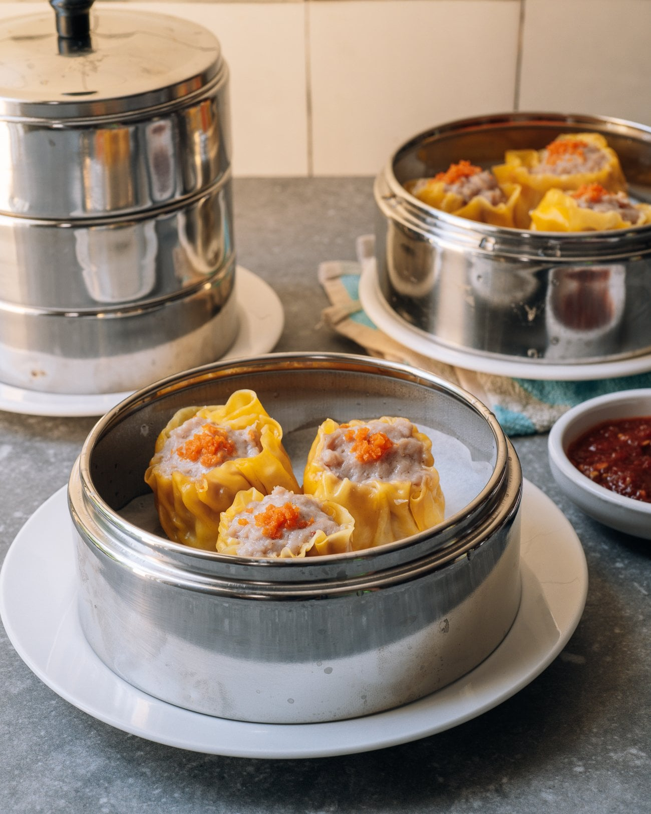
- Use The Woks of Life siu mai method for the pork-shrimp filling and wrapper shape.
- Mix ground pork, chopped shrimp, ginger, scallion, soy sauce, Shaoxing wine, sesame oil, white pepper, sugar, salt, and cornstarch until sticky.
- Keep the filling cold; slap it against the bowl so it binds and bounces instead of crumbling.
- Pack wrappers full, leave the top open, and steam until the pork is fully cooked and glossy.
| ingredient | amount |
|---|---|
| ground pork | |
| shrimp | |
| siu mai wrappers | |
| dried or fresh shiitake mushrooms | |
| ginger | |
| scallion | |
| soy sauce | |
| Shaoxing wine | |
| sesame oil | |
| cornstarch | |
| sugar | |
| salt | |
| white pepper |
$0.52 / shao mai
$2.00 / shao mai
0.26x
600 kcal
65/100
78/100
38g
1,500mg
145mg
0.12%
appetizer
kurobuta pork xiao long bao
- Base it on Kenji's soup dumpling method: make a gelatin-rich pork aspic first and chill it solid.
- Mix fatty Kurobuta pork with ginger-scallion water, Shaoxing wine, soy sauce, sesame oil, white pepper, sugar, and finely diced aspic.
- Roll wrappers thin at the edge and slightly thicker in the center so the bottom holds soup.
- Pleat tightly toward the 18-fold look without tearing; keep dumplings cold until steaming.
- Steam hard for about 8 minutes and eat immediately with black vinegar and ginger.
| ingredient | amount |
|---|---|
| pork skin, bones, or feet for aspic | |
| water for aspic | |
| chilled diced aspic for filling | |
| fatty Kurobuta ground pork | |
| flour for wrappers | |
| hot water for wrappers | |
| ginger-scallion water | |
| Shaoxing wine | |
| soy sauce | |
| sesame oil | |
| sugar | |
| salt | |
| white pepper |
$0.96 / XLB
$1.90 / XLB
0.50x
550 kcal
62/100
76/100
30g
1,150mg
110mg
0.15%
entree
butaton-style tonkotsu ramen
- Use Serious Eats tonkotsu broth as the backbone: blanch bones, scrub them clean, then keep a violent rolling boil for 12-18 hours.
- Build separate parts: chashu pork, soft ajitama eggs, tare, black garlic oil or spicy aroma oil, and thin noodles.
- Strain broth, emulsify it hot, and season each bowl with tare instead of salting the pot blindly.
- For the Butaton lane, go rich and spicy: pork belly or chashu, egg, bean sprouts, green onion, kikurage, nori, and black garlic oil.
- Assemble fast so the noodles stay springy and the broth stays opaque and hot.
| ingredient | amount |
|---|---|
| pork trotters or neck bones | |
| chicken backs or feet | |
| pork fatback | |
| water for broth | |
| chashu pork | |
| fresh ramen noodles | |
| tare | |
| black garlic or chili aroma oil | |
| soft ajitama eggs | |
| bean sprouts | |
| scallions | |
| kikurage or mushroom topping |
$9.50 / bowl
$18.00 / bowl
0.53x
1,025 kcal
52/100
86/100
45g
1,650mg
250mg
0.1%
entree
black-garlic tonkotsu instant ramen
- Start with Nongshim Premium Tonkotsu Kuromayu; cook the noodles in the creamy pork-style broth and stir in the black garlic oil.
- Add a soft poached egg, warmed thin pork slices, mushrooms, small soft-tofu cubes, and toasted sesame.
- Finish with tenkasu only after the bowl is assembled so the top stays crispy over the hot broth.
- Base label: 460 kcal, 62g carbs, 5g fiber, 19g fat, 9g protein, 1510mg sodium; listed row estimates include the toppings.
$5.25 / bowl
$15.00 / bowl
0.35x
825 kcal
46/100
82/100
39g
1,450mg
245mg
0.08%
dessert
sticky rice with mango and coconut
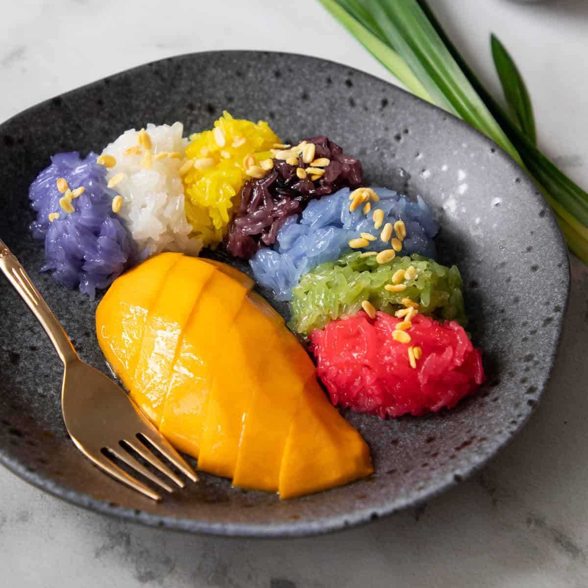
- Use Hot Thai Kitchen's mango sticky rice method for the soaked rice, coconut soak, and salted sauce.
- Soak glutinous rice at least 4 hours; steam until chewy and translucent.
- Warm coconut milk with sugar and salt; fold most into hot rice and rest covered so it absorbs.
- Serve with ripe mango and toasted sesame or crispy mung beans.
$7.50 / plate
$12.00 / plate
0.63x
700 kcal
18/100
36/100
9g
150mg
0mg
0.06%
beverage
thai tea
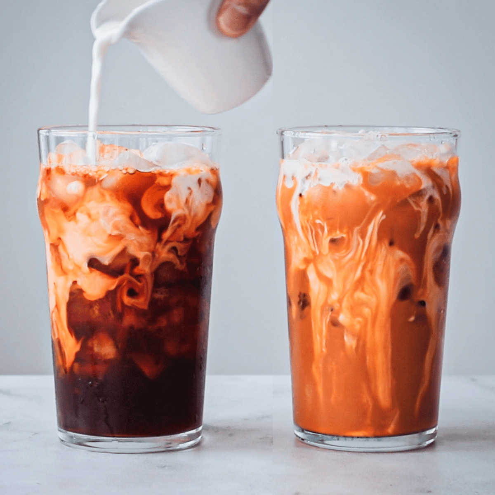
- Use Hot Thai Kitchen's Thai iced tea method for strong tea, clean straining, and the condensed/evaporated milk finish.
- Brew Thai tea mix strong and long enough to pull the orange color and spice.
- Strain very clean; gritty tea dust ruins the drink.
- Sweeten while hot, chill, pour over ice, and top with evaporated milk or half-and-half.
| ingredient | amount |
|---|---|
| water | |
| Thai tea mix | |
| sugar | |
| sweetened condensed milk | |
| evaporated milk or half-and-half | |
| ice |
$2.38 / 24 oz cup
$7.00 / 24 oz cup
0.34x
350 kcal
25/100
35/100
6g
220mg
25mg
0.03%
beverage
Electrolit strawberry kiwi
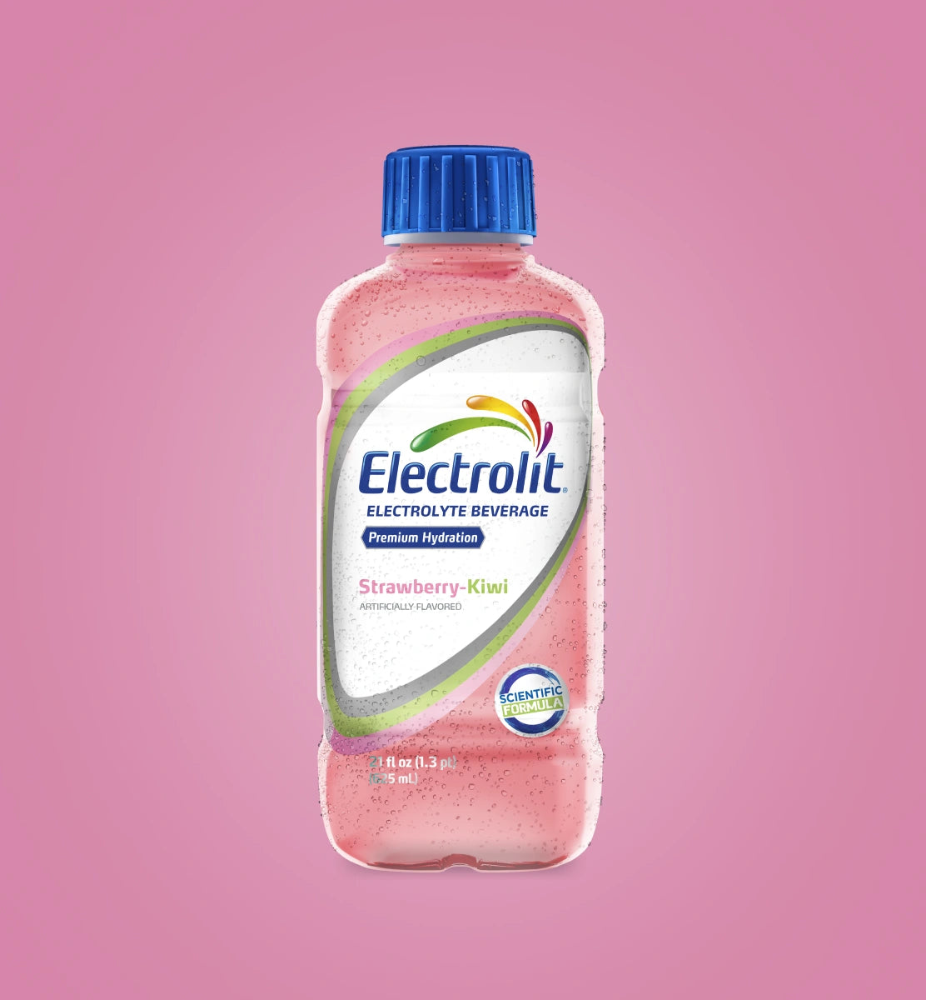
- Buy a 21 fl oz Electrolit Strawberry Kiwi bottle.
- Drink chilled.
- Official label: 130 kcal, 31g carbs/sugars, 430mg sodium, 490mg potassium, 30mg magnesium, 50mg calcium, 670mg chloride.
$2.45 / bottle
$2.45 / bottle
1.00x
130 kcal
32/100
84/100
0g
0mg
0mg
0.01%
candy
mango chili lollipop
- Buy a Mexican mango lollipop with chili salt coating.
- One Vero-style lollipop is the serving.
- Label range: 50-60 kcal, 13-14g carbs, 0g fiber, 0g protein, about 220-290mg sodium.
$0.27 / lollipop
$0.27 / lollipop
1.00x
60 kcal
38/100
45/100
0g
0mg
0mg
0.01%
side
Gyeranjjim (Korean steamed eggs)
- Use Maangchi's ttukbaegi gyeranjjim method for the soft, domed Korean steamed eggs.
- Whisk eggs with anchovy broth or water, salt, scallion, and a little sesame oil until fully smooth.
- Cook gently in a ttukbaegi or covered bowl; stir once as curds begin to form.
- Stop when the center is barely set and finish with sesame oil and scallion.
$2.25 / bowl
$7.00 / bowl
0.32x
250 kcal
92/100
78/100
17g
700mg
465mg
0.05%
side
cheese corn
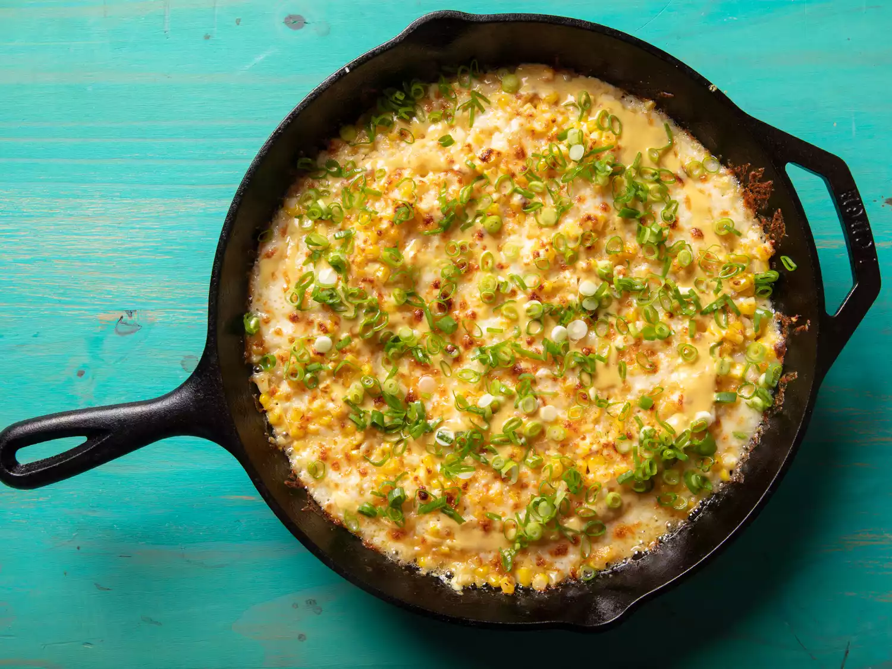
- Use Serious Eats Korean corn cheese for the bubbling skillet version.
- Drain corn well so it fries instead of boiling.
- Cook with butter, mayo, a little sugar, salt, and pepper until hot and glossy.
- Cover with mozzarella; broil or lid the skillet until bubbling, then eat while the cheese still stretches.
$5.25 / order
$12.00 / order
0.44x
475 kcal
56/100
68/100
14g
500mg
65mg
0.07%